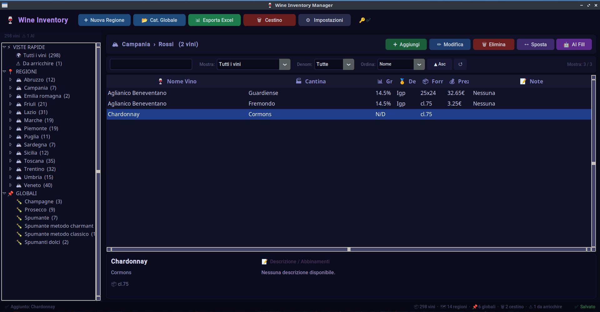
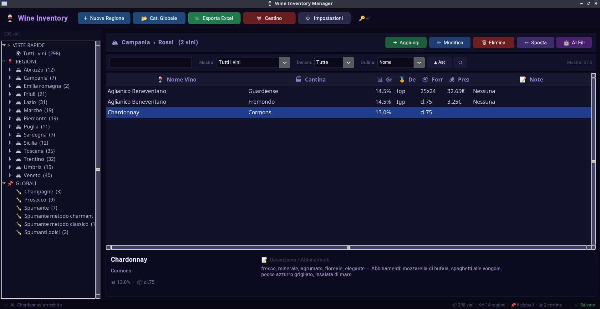

Tra Connessione Globale, Automazione Algoritmica
e Alienazione Umana
Percorso Multidisciplinare - Esame di Stato
La pila TCP/IP organizza il flusso di dati in un'architettura gerarchica, basata sull'incapsulamento:
Il Livello di Trasporto gestisce la connessione tra processi remoti:
Interfaccia diretta per l'utente che definisce la semantica dello scambio dati:
Siamo passati dalla scrittura di codice puramente imperativo all'orchestrazione intelligente.
Progetto "Wine Inventory Manager" (Python): Esempio di Assisted Coding (bug-fixing) e Chiamate API in un gestionale reale.


Cybersecurity is no longer just technical; it protects democracy and freedom.
The primary vulnerability is almost never the software, but human psychology.
Through Social Engineering, attackers bypass advanced encryption by manipulating individuals into subverting protocols and breaking the chain of trust.
The manipulation of data and the vulnerability of the human factor connect directly to George Orwell's dystopian vision:
La riduzione dell'individuo a un set di credenziali informatiche rievoca la crisi dell'identità primonovecentesca studiata da Pirandello.
Oggi, la "Forma" pirandelliana si è evoluta: coincide con la nostra Identità Digitale.
La complessità biologica ed emotiva dell'essere umano viene cristallizzata, standardizzata e ingabbiata all'interno di record di database e profili algoritmici.
Adriano Meis tenta di vivere fuori dalla "Forma", ma fallisce: la società riconosce solo il dato burocratico.
Ciò anticipa l'Identity Theft: come Meis, l'utente moderno privato delle sue credenziali (o hackerato) subisce un'esclusione totale dai servizi, andando incontro a una vera morte civile ed economica.
La critica alla meccanizzazione.
Serafino, ridotto a "una mano che gira la manovella", perde la propria interiorità. Il suo mutismo finale rappresenta la resa definitiva dell'uomo all'apparato tecnologico, che diventa soggetto attivo e alienante.
Questo percorso multidisciplinare dimostra l'interconnessione profonda tra la struttura ingegneristica e l'umanistica:
"La tecnologia deve rimanere uno strumento di emancipazione, tutelando costantemente l'individuo biologico affinché la sua identità reale non venga mai alienata o soffocata dalla maschera digitale."